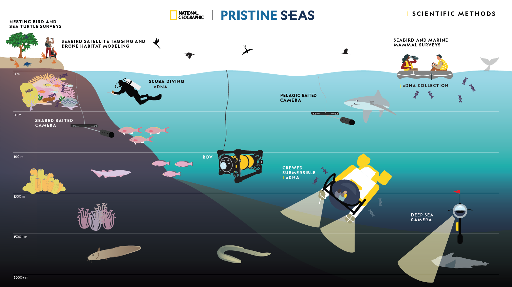

Standardized protocols for marine ecosystem assessment
The Pristine Seas Science Team employs a range of complementary research methods to document and study marine ecosystems. Each method provides unique insights into different components of ocean biodiversity, ecological processes, and ecosystem health.

This integrated research approach allows us to:
Establish baselines for pristine and near-pristine marine ecosystems
Document biodiversity across a wide range of habitats and trophic levels
Assess ecosystem health and function
Quantify human impacts on marine environments
These insights are fundamental for effective conservation and our job includes to translate them into actionable strategies for marine protection.
Our field research strategically integrates multiple assessment methods to provide comprehensive ecosystem insights beyond what individual techniques can reveal. Sampling sites are carefully selected to maximize spatial and temporal alignment across methods, enabling analyses of relationships between different ecosystem components.
To ensure seamless data integration, all methods follow standardized protocols including uniform taxonomic references, consistent metadata structures, shared spatial hierarchies, and compatible statistical approaches. This standardization facilitates robust cross-method analyses that reveal critical ecological relationships and functions.
Hierarchical spatial structure
Our nested structure organizes all collected data into meaningful spatial contexts:
Expedition: A complete research campaign to a country or target area Convention:[ISO3]_[YEAR] Examples: PLW_2023, MDV_2024
Region: Broad geographic or administrative area Examples: Temotu Province, Manus Province
Subregion: Intermediate unit like an island, atoll, gulf, or reef complex Examples: Duff Islands, Harengan
Locality: Local named feature such as a islet, community, village Examples: Taumako, Pinyang island
Site: Specific location where sampling methods are deployed Convention:[ISO3]_[YEAR]_[METHOD]_[SITE] Examples: PLW_2023_uvs_001, FJI_2023_pbruv_001
Station: A discrete sampling unit within a site, usually depth strata Convention:[ISO3]_[YEAR]_[METHOD]_[SITE]_[STATION] Examples: PLW_2023_uvs_001_10m, PLW_2023_uvs_001_20m
Measurement/Observation: Individual data points collected at a station Examples: Fish count, Coral cover percentage, remote video footage
This allows for analyses at multiple scales while maintaining clear relationships between sampling elements.
Sampling Hierarchy
The table below outlines the spatial sampling structure for each method in the Pristine Seas Science Database. It defines the hierarchical relationship from sites to observations, ensuring clarity and consistency across protocols.
Pristine Seas Sampling Hierarchy
Site > Station > Transect > Observation
Method
Site
Station
Transect
Observation
UVS
Dive survey
Depth strata
BLT (3), LPI (1), Inverts (1), Recruits (10)
Counts, biomass, cover
eDNA
Water collection site
Depth strata
Water bags or pumps
Species DNA
Pelagic BRUVS
5-rig BRUVS deployment
Rig
N/A
Species ID, length, MaxN
Seabed BRUVS
Single BRUVS deployment
Single station
N/A
Species ID, length, MaxN
Submersible Surveys
Sub dive
Depth strata
Video transects
Species ID, counts, habitat
Deep-Sea Cameras
Single camera deployment
Single station
N/A
Species ID, abundance
ROV Surveys
ROV dive
Depth strata
Video transects
Species ID, counts, habitat
YSI Loggers
Logger deployment
Single profile
N/A
Temp, salinity, DO, pH
Bird Surveys
Survey point
Single survey
Walking transect or point count
Species counts, behavior
The Pristine Seas Science Database serves as the central repository for this integrated data architecture, preserving methodological connections while maintaining data integrity. Complete documentation of database structure and integration protocols is available here.
Data Processing
Each field method follows specific processing workflows, but all adhere to a standardized framework that ensures data quality, reproducibility, and integration. Our data processing approach balances method-specific requirements with system-wide standards.
Common Data Standards
All methods implement these critical standards:
Data Entry & Validation
Structured data entry forms with built-in validation rules
Automated checks for impossible values and outlier detection
Quality Control Procedures
Multi-stage verification process (field, office, database)
Cross-method consistency checks for shared parameters
File Naming & Organization
Consistent folder structure and file naming conventions
Version control system
Statistical Approaches
Standardized methods for handling zero-inflated ecological data
Consistent treatment of temporal and spatial autocorrelation
Database Integration
Automated (i wish) data ingestion pipelines for each method